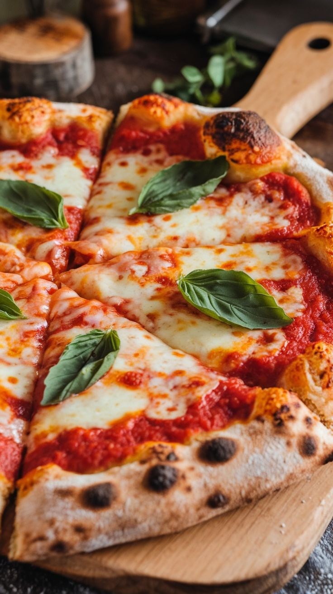

Your daily dose of culinary tips, trends, and inspiration.
10 Quick Dinners for Busy Weeknights
by Jamie Oliver
No time to cook? These quick recipes have you covered in under 30 minutes!
Cooking can be quick and easy! Here are ten dinner ideas that require minimal ingredients, yet deliver maximum flavor. Whether you're in the mood for pasta, stir-fry, or a hearty salad, these recipes will save your weeknight dinners.
Top 5 Baking Mistakes and How to Avoid Them
by Mary Berry
From sunken cakes to burned crusts — fix your baking game with these tips.
Baking is an art, and like any art, it's important to avoid common mistakes. This blog will guide you through the most frequent baking issues, such as overmixing, underbaking, and miscalculating temperatures, so you can master your cakes and pastries.
Plant-Based Recipes That Even Meat-Lovers Enjoy
by Tabitha Brown
Try these delicious dishes that make going plant-based easy and tasty.
Plant-based meals are packed with flavor and nutrition! In this blog, we'll explore hearty, plant-based recipes that will satisfy even the most devout meat lovers. These dishes are easy to prepare and perfect for family dinners or casual gatherings.

How to Make the Perfect Homemade Pizza
by Giuseppe Rossi
Master the art of pizza-making with this step-by-step guide.
Homemade pizza is a family favorite, and it's easier than you think. From making the dough to selecting the perfect toppings, this guide covers everything you need to make pizza night a success.
The Ultimate Guide to Meal Prep for the Week
by Rachel Green
Save time and eat healthy all week long with these meal prep tips.
Meal prepping is a game-changer for busy people. This blog walks you through the best strategies for prepping a week's worth of meals in one go, from breakfast to dinner, so you can enjoy healthy meals without the stress.
5 Simple Desserts You Can Make in 10 Minutes
by Nigella Lawson
Craving something sweet but short on time? Try these easy desserts!
Need a quick sweet fix? These five desserts can be whipped up in under ten minutes, perfect for when you're in a rush but still want something indulgent.
Cooking for Beginners: The Essential Tools
by Gordon Ramsay
Get started in the kitchen with these must-have cooking tools.
Whether you're a novice cook or looking to upgrade your kitchen gear, this blog outlines the tools every home chef should have to make cooking easier and more enjoyable.
Cooking with Kids: Fun and Easy Recipes
by Jamie Oliver
Get your little ones involved with these kid-friendly recipes.
Cooking with kids can be a fun and educational experience. These recipes are easy for children to help with and perfect for introducing them to the kitchen.
How to Make Perfect Pancakes Every Time
by Rachel Green
Fluffy, delicious pancakes made easy with these tips.
Pancakes are a breakfast classic, and getting them just right can make your morning. Follow these simple steps for perfectly fluffy, golden pancakes every time.